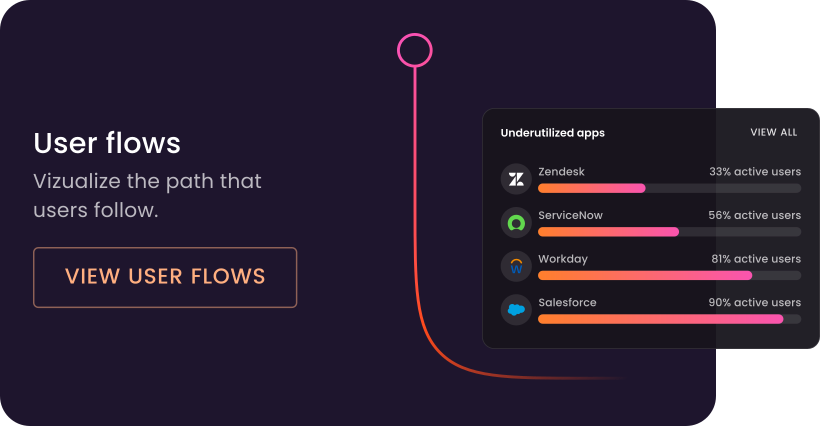

Ensuring software
works for people
Turn your enterprise software into a business accelerator—with 50% faster onboarding, 30% fewer errors, and a 3.4x ROI in the first year.


Turn your enterprise software into a business accelerator—with 50% faster onboarding, 30% fewer errors, and a 3.4x ROI in the first year.
Apty isn't just another DAP. It's the cross-application co-pilot
that reduces errors,
improves processes, and delivers ROI from day one.

Apty removes the everyday roadblocks that slow teams down—from
clunky
onboarding to inconsistent processes across complex tech stacks.

Apty turns user behavior and process data into personalized,
real-time guidance, helping employees adopt new workflows
with zero guesswork.
Don’t wait months to see value. Apty’s in-app guidance and automation
deliver productivity gains from day one, cutting onboarding time in half.
Transform how you roll out change. Apty helps you scale new
processes
across the enterprise—with measurable outcomes,
not just adoption metrics.
Reduce data errors across your enterprise to make informed decisions

Smart On-Screen Guidance
Apty gives users step-by-step nudges, just-in-time prompts, and process tips—reducing friction and keeping productivity flowing
Cross-App Workflows
Streamline task completion across apps with AI-driven workflows that enforce SOPs, eliminate busywork, and save hours every week.

GENAI-Powered Help
Apty’s conversational AI provides unified guidance across platforms so your teams get help instantly, no matter where they’re working.

Behavioral Insights & Validation
Monitor user actions discreetly, catch data-entry errors, and track adoption bottlenecks before they derail performance.
From faster onboarding to measurable ROI, here’s how Apty helps leaders turn software into
a business advantage.
Executive Summary L&D teams face an impossible choice: continue investing...
Executive Summary Custom application adoption represents a $702 million crisis...
Quick Summary Workday compliance isn't just about following rules--it's about
See how Apty delivers business impact-fast.